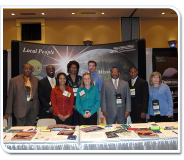

Determine what type of attire is appropriate for the event. The attire should reflect the culture of the agency but also be appropriate for the event. For instance, most field positions do not include wearing suits and ties as part of the daily routine. So, unless the particular event is considered formal, you may choose to represent the agency by wearing NRCS polo shirts and slacks instead. Asking the event hosts or organizers the typical attire of event attendees can help you in this aspect of planning.
Be sure to communicate the appropriate attire to every member of the recruitment team. We’ll talk more about preparing yourself to represent the agency in the next lesson.